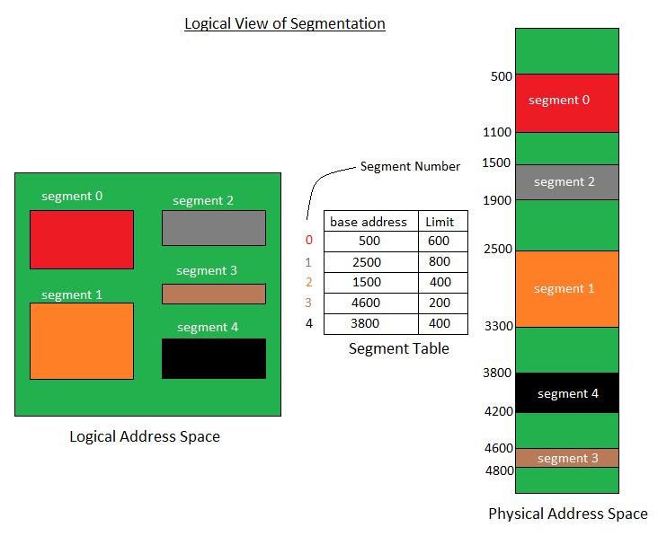

A Memory Management technique in which memory is divided into variable sized chunks which can be allocated to processes. Each chunk is called a Segment. A table stores the information about all such segments and is called Segment Table.
Segment Table – It maps two dimensional Logical address into one dimensional Physical address. It’s each table entry has:
- Base Address: It contains the starting physical address where the segments reside in memory.
- Limit: It specifies the length of the segment.

Translation of Two dimensional Logical Address to one dimensional Physical Address.

Address generated by the CPU is divided into:
- Segment number (s): Number of bits required to represent the segment.
- Segment offset (d): Number of bits required to represent the size of the segment.
Advantages of Segmentation –
- No Internal fragmentation.
- Segment Table consumes less space in comparison to Page table in paging.
Disadvantage of Segmentation –
- As processes are loaded and removed from the memory, the free memory space is broken into little pieces, causing External fragmentation.